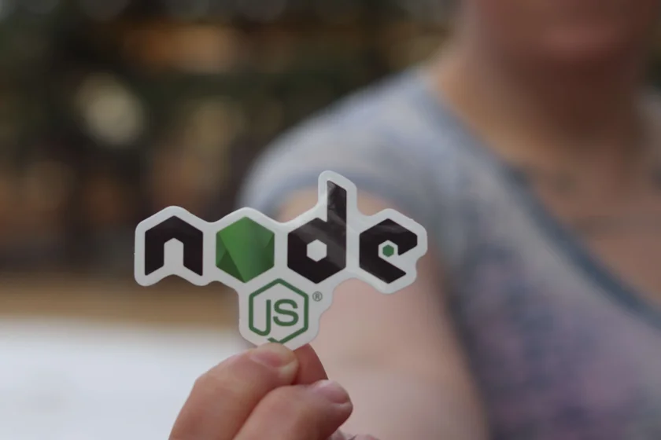

INGENIERO DE SISTEMAS · FULL STACK DEVELOPER
Hola, soy
Jhoan Hernández.
Desarrollador Full Stack en CobisTopaz.
Java y Python · APIs RESTful y microservicios.
Core bancario, canales digitales y soporte de aplicaciones.
UN POCO DE CONTEXTO
Sobre mí.
Soy ingeniero de Sistemas y Computación de la Universidad Antonio Nariño. Cuento con tres años de experiencia construyendo, manteniendo y dando soporte a aplicaciones, con énfasis en Java y Python. Actualmente trabajo en CobisTopaz, desarrollando soluciones para entidades del sector financiero.
- Desarrollo de APIs RESTful y microservicios.
- Análisis de errores y soporte correctivo y evolutivo.
- Bases de datos relacionales y modelos de información.
- Pruebas, documentación técnica y despliegues.
NOV. 2025 — ACTUALIDAD
CobisTopaz
Desarrollador Full Stack
Desarrollo y mantenimiento de APIs y servicios Java para core bancario y canales digitales. Análisis de incidencias con Sybase y SQL Server, soporte correctivo y evolutivo, Tomcat, Apache, pruebas unitarias y documentación técnica.
MAR. 2024 — OCT. 2025
Grupo RQ
Líder de desarrollo
APIs con Python, FastAPI, Django y PostgreSQL para sectores financiero, médico, veterinario y comercial. Coordinación de dos desarrolladores junior, pipelines CI/CD, Docker y despliegues en AWS.
AGO. 2023 — MAR. 2024
UrU Tecnología
Desarrollador Junior
APIs y portales web, requisitos funcionales, bases de datos SQL y documentación técnica.
UNA MUESTRA DE MI TRABAJO
Proyectos.
Petlocale
01Aplicación para la gestión de productos y servicios veterinarios.
Ver repositorio ↗Inventory
02Gestión de inventario con Node.js, Express, MySQL y JavaScript.
Ver repositorio ↗
To Do
03Aplicación de tareas con React para organizar los pendientes del día.
HERRAMIENTAS CON LAS QUE CONSTRUYO
Conocimientos.
FULL STACK
DESARROLLO WEB
01 / INTERFACES
Frontend.
Interfaces web con JavaScript, Angular, React y Next.js. Estructura y estilos con HTML y CSS.
JavaScriptAngularReactNext.jsHTMLCSS
JSAReact
02 / LÓGICA DE NEGOCIO
Backend.
APIs RESTful y servicios en Java y Python. Desarrollo, integración y mantenimiento de soluciones para diferentes sectores.
JavaSpring BootPythonFastAPIDjango
JavaSpringPython
03 / DATOS Y DESPLIEGUE
Más allá del código.
Modelos de datos, consultas SQL, pruebas y documentación. Conocimientos intermedios en automatización de despliegues e infraestructura.
SybaseSQL ServerPostgreSQLMySQLSQLiteDockerAWSCI/CDTomcatApacheGitGitLabGitHub ActionsBitbucket
SQLDockerAWS